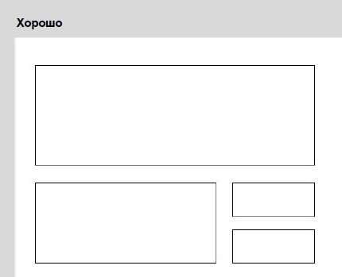
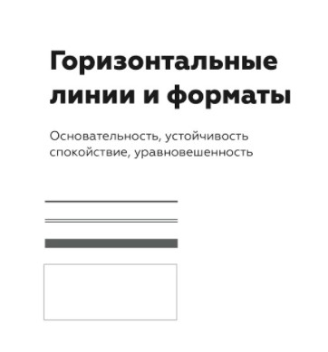

Мой Справочник | WEB-DESIGN | Композиция
КОМПОЗИЦИЯ
Виды композиций:
- Симметрия - асимметрия
- Статика - динамика
Акценты
- Иллюстрации
- Крупные заголовки
- Кнопки, Иконки
- Текст
- ПРОСТРАНСТВО и ОТСТУПЫ - это тоже часть композиции. Нужно оставлять пространство ("воздух") для контента слева-справа, сверху-снизу, чтобы не было заграмажденности
- при выборе композиции всегда отталкивайтесь от типа и количества контента (текст на фото нужно размещать так, чтобы его было видно; большие блоки текста нужно разбивать на абзацы и располагать с левой стороны макета и т.д.).
- у всех элементов сайта должно быть свое место, которое знакомо пользователю по опыту (например, меню находится вверху сайта, кнопка размещается только после какого-то текста, который подготавливает пользователя к клику).
- не изобретайте велосипед, всегда смотрите на готовые композиционные решения уже созданных сайтов и перенимайте их опыт и опыт пользователей.
- Элементы в идеале не должны быть сильно большими, лучше отталкиваться от меньших размеров
- Поймать ВНИМАНИЕ (Визуальная доминанта). Цвет, размер, контраст, пространство
- Задать НАПРАВЛЕНИЕ (Иерархия заголовков, объектов, направление чтения )
- УПОРЯДОЧИТЬ (Выравнивание, сетка)
- Размером. Чем больше - тем заметнее. Контраст размеров
- Цветом. Выделение контрастным цветом
- Простраство. Усиливает фокус внимания. Отступы. Якорные области
- Иерархии заголовков. Самое важное большое, остальное - меньше
- Иерархии объектов. Важные объекты должны выделяться размером
- Фоном. Можо объединять или разделять отдельные смысловые элементы, выделять важные
- Сетка, модульность. Создаёт порядок, ритм
-
Размер
-
Контрпространство
-
Выделение цветом

-
Выделение размером

Рекомендации:
Задачи композиции
Визуальная доминанта - точка в композиции, которая однозначно цепляет ВНИМАНИЕ. Должна быть однозначной. Акцент. Заголовок, рисунок, цвет, пространство, контраст
Акцентные области. ЯКОРИ

КАК СОЗДАВАТЬ ДОМИНАНТЫ
ХОРОШИЙ ДИЗАЙН выделяет ГЛАВНОЕ и ПОДЧИНЁННОЕ, создаёт ИЕРАРХИЮ объектов, помогает пользователю найти свой путь
ГЕОМЕТРИЯ
Формы



Фигуры в макете
Точка •
В типографике можно рассматривать любой элемент небольших размеров (кнопка, иконка, логотип, отдельные буквы и цифры). Имеют только один фокус внимания. Круг - частный случай точки, самая "эгоистическая фигура", максимально притягивает внимание, максимальный ацкцент. Точечные объекты чаще всего располагают в ЯКОРЯХ.
Линия —
В типографике это строка, самый удобный, читабельный, скромный, спокойный и лаконичный элемент в вёрстке. Это заголовки, хэдэр, футер, невысокие блоки. Как якорный объект строка лучше всего себя чувствует СВЕРХУ или СНИЗУ модуля.
Прямоугольник ▆
Универсальный контейнер для всех типов объектов: точечных, строчных и прямоугольных.
Теория близости
Объекты, расположенные близко друг к другу, рассматриваются ближе и по логике и по смыслу
Геометрия должна направлять пользователя, должно быть ощущение СКРОЛЛИНГА сайта
Золотое сечение (пропорция Φ)
Это такое деление целого на 2 части, при котором отношение БОЛЬШЕГО / МЕНЬШЕМУ = ЦЕЛОГО / БОЛЬШЕМУ ≈ 1.618
Это такое деление целого на 2 части, при котором отношение МЕНЬШЕГО / БОЛЬШЕМУ = БОЛЬШЕГО / ЦЕЛОМУ ≈ 0,618
1 = 0.618 + 0.382 ≈ 62% + 38%;
Φ = 0.618 / 0.382 = 1.618;
Φ2 - Φ = 1;
Если нужно найти БОЛЬШУЮ часть, то значение ЦЕЛОГО нужно поделить на Φ (либо умножить на 0,618)
Если нужно найти МЕНЬШУЮ часть, то значение ЦЕЛОГО нужно поделить на Φ2 (либо умножить 0,382)
Последовательность Фибоначчи:
Каждый следующий член ряда равен сумме двух предыдущих. При этом отношение членов этого ряда будет стремиться к Φ
1 + 1 + 2 + 3 + 5 + 8 + 13 + 21 + 34 + ... + n + (n+1) + ...;
(n+1):n ---> Φ